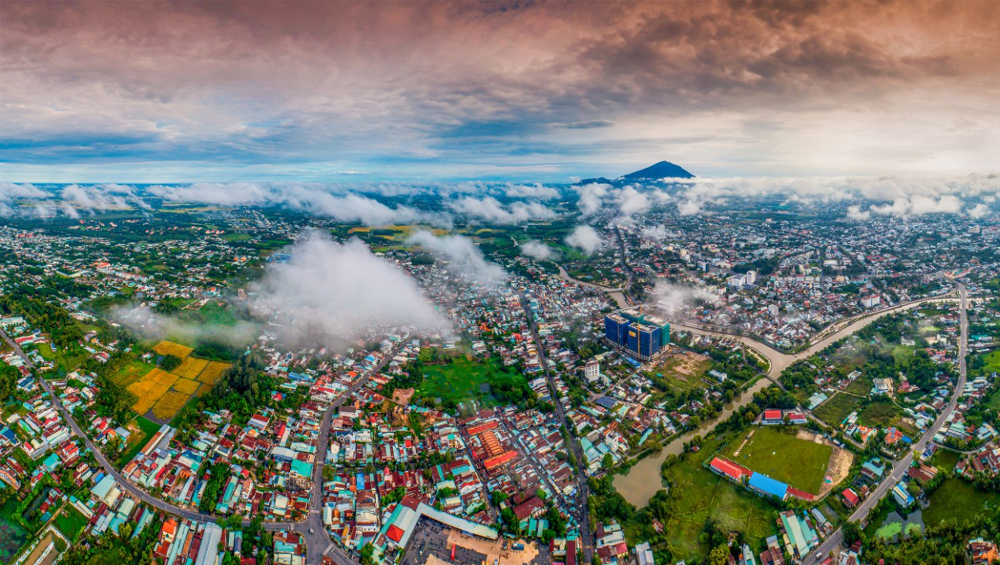

Tây Ninh
Tây Ninh là một tỉnh thuộc vùng Đông Nam Bộ, nổi tiếng với núi Bà Đen – ngọn núi cao nhất Nam Bộ, cùng các di tích văn hóa, lịch sử và tôn giáo đặc sắc. Đây là điểm đến kết hợp giữa hành hương, khám phá thiên nhiên và du lịch sinh thái.
Vị trí gần TP.HCM giúp Tây Ninh trở thành điểm dã ngoại, hành hương cuối tuần lý tưởng của du khách miền Nam.
Bối cảnh lịch sử
Tây Ninh là nơi ra đời và phát triển mạnh mẽ của đạo Cao Đài – một tôn giáo đặc trưng Việt Nam. Vùng đất này cũng từng là căn cứ cách mạng trong kháng chiến chống Pháp và Mỹ, có nhiều di tích lịch sử quan trọng.
Đặc điểm nổi bật
- Núi Bà Đen cao 986m, có hệ thống cáp treo hiện đại
- Tòa Thánh Cao Đài – trung tâm đạo Cao Đài độc đáo
- Hồ Dầu Tiếng rộng lớn, cảnh sắc yên bình
- Ẩm thực dân dã: bánh tráng phơi sương, muối tôm
- Lễ hội Núi Bà Đen thu hút hàng nghìn lượt khách hành hương
Gợi ý lịch trình
Ngày 1: Tham quan Tòa Thánh Cao Đài, hồ Dầu Tiếng, chùa Gò Kén
Ngày 2: Leo núi hoặc đi cáp treo Núi Bà Đen, thưởng thức đặc sản Tây Ninh